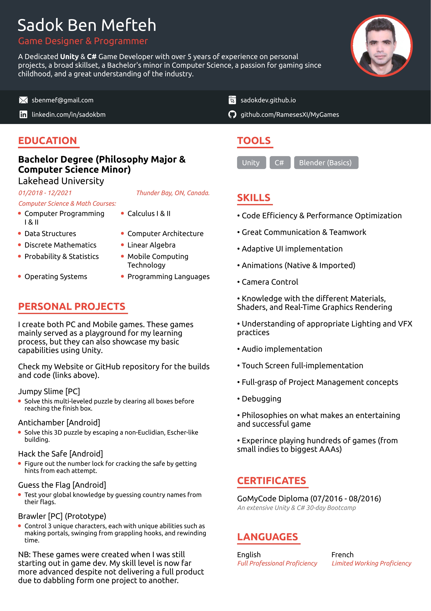

Hey There,
I'm a game dev enthousiast with some experience under my belt when it comes to conceiving, designing and
building Android and PC games from scratch.
Up till now, I've mainly done it for fun and for improving my skills.
But lately, I've decided it's time to accept work offers, either full-time
employment or freelance jobs. I use
Unity and C#.
If you are want to know more about me, you can
If you'd like to get in touch, please do through: sbenmefteh@gmail.com
Jumpy Slime [PC]
Solve this multi-leveled puzzle by clearing all boxes before
reaching the finish box.
Antichamber [Android]
Solve this 3D puzzle by escaping a non-Euclidian, Escher-like
building.
Hack the Safe [Android]
Figure out the number lock for cracking the safe by getting
hints for each attempt.
Guess the Flag [Android]
Test your global knowledge by guessing country names from
their flags.
Brawler [PC] (Prototype)
Control 3 unique characters, each with unique abilities such as
making portals, swinging from grappling hooks, and rewinding
time.

This is a summary of my life story regarding my passion for game development. Giving some context and background
on how I got onto this path.
Gaming Obsession:
I've been playing games since I was 4 years old, it started with random PC games I found on the family desktop,
into online flash games, later getting sucked into PlayStation 2 games, then Game Boy, PSP, Mobile games, but
especially playing pretty much all and any PC game I liked (Cracked games, because back in the day there was no
possibility to make international purchases from Tunisia).
I would scour the internet to find the next game to get obsessed about. I’ve played and enjoyed probably every
possible game genre, from the big studio games to the small indie games, which I would sometimes find more
enjoyable than the former. In fact, it was those creative small indie games (Don't Starve, Stardew Valley,
Battlerite…) that motivated me and opened my eyes to the possibility of creating games myself.
I also really enjoyed competitive games and would achieve relatively high ranks once I figured out the game's
macro fundamentals and honed my mechanical skills, such as Platinum on LoL, Diamond on OW, and lately Diamond on
AoE4.
School and Game Dev:
At school I really loved Mathematics. It was fun for me because I looked at solving math problems as if solving
puzzles, pretty much a game. But I still didn't like how it was purely theoretical. It felt like a completely
useless practice to me until I got into coding in Unity. The ability to translate mathematical reasoning and
expressions into actual tangible gameplay mechanics felt pretty astonishing to me and I knew this is the career
I will be following, as it merges my love for Math with Gaming.
I enrolled in an intensive 30-day C#/Unity bootcamp, started working solo on several game ideas, and even got
into university for a computer science degree.
I made a few small games to get myself comfortable with the development process, but my goal was to create a hit
multiplayer turn-based combat game by myself that would have a dedicated following, which I believed I could do
from the very start of this journey. And that was the beginning of my downfall.
I was totally creatively blocked when it comes to coming up with something that can live up to my high
standards. I would create and work on a whole concept for months only to scrap it and start over because it
didn't feel good enough. I would eventually get super frustrated and start dabbling with a million project ideas
without getting anywhere, either due to having an unfeasible scope or unreachable expectations for a rookie. I
started losing faith in myself as a game dev.
Even though I had a robust skillset at that point, I knew I never really gotten into this to slave away at some
company. I wanted to create my personal epic games, not mediocre, but great games that would have great
followings, all by myself.
Those immature and unrealistic expectations made me so disillusioned with this whole thing. I lost confidence
and faith in my ability and initial vision to make something great to the point where I started looking into
different career paths, something that I can be good at.
Exploring Other Passions & Career Paths:
This is an epic chapter of my life that I won't get into its details, but another thing I was simultaneously
passionate about was Non-Duality and Spiritual Awakening.
I switched my major to Philosophy half-way through. I mixed speeches about this topic with music which I posted
on YouTube. Lived in a monastery in Japan. And even co-founded a group which organizes events in which I get to
talk about this topic.
I also got into Astrology which I was so obsessed about that I was rigorously studying to become a professional
astrologer. Later I realized that the practice of interpreting and translating for people is not as easy and
interesting as just silently looking into my own charts and receiving mind-blowing insights, given that I
thoroughly understand myself and my life situation as opposed to dealing with strangers.
I later saw an opportunity of getting rich quick by combining my astrological knowledge with trading currencies
and stocks. After a few months, although I found some cool correlations, there weren’t enough concrete and
reliable indicators to even make a consistent income. I gave up on that too.
Back to Game Dev:
When a friend, one day, motivated to get back into programming, I re-opened my old projects, went through the
code and kind of re-awakened and re-lived that passion and excitement I had when I first made them.
I went through everything I created in the past, refreshed my knowledge of all the coding and unity concepts,
and even started working on a new project.
Now, I feel like the next step for me is to work full-time for a good company. Not only will I be contributing
my skills to a greater goal, but I'd also be learning and improving myself in return.
One day, I will create that epic game I dreamt about. Even though I still have no clue when, how, and even what
it would be :p